Пользовательская документация
Интерактивная версия документа Инструкция_АТЛ_дополненная.docx. Переходите по дереву слева, ищите через поиск и поднимайтесь к оглавлению в любой момент.
Содержание
Перемещение панелей разделов и разделов
Разделы программы (Главное, Логистика, CRM и другие) отображаются в панели разделов в левой части окна. Состав панелей, их отображение и порядок разделов можно настраивать под себя.
Раздел — это крупная функциональная область программы, объединяющая работу с данными одного направления (например, «Главное», «Логистика», «CRM»).
Панель разделов — это панель в левой части окна, на которой отображаются все разделы программы.
Панель навигации — это панель справа внутри раздела со списком команд и справочников этого раздела.
1.1 Настройка отображения панелей
В правой части, в верхнем углу интерфейса, откройте меню «Сервис и настройки» - «Настройки» и выберите команду «Настройка панели»;
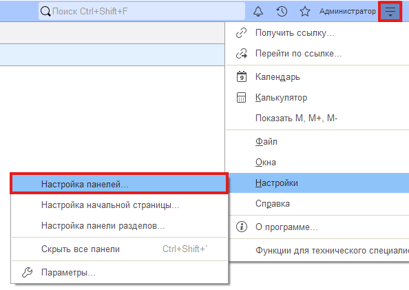
В открывшемся окне отображается актуальная настройка панелей, а также дополнительные панели для настройки отображения в интерфейсе.
Чтобы отобразить необходимую панель в интерфейсе – выберете панель вручную (на экране или из списка ниже) и переместите в удобное для вас положение.
Сохраните изменения кнопкой «Применить» и «ОК».
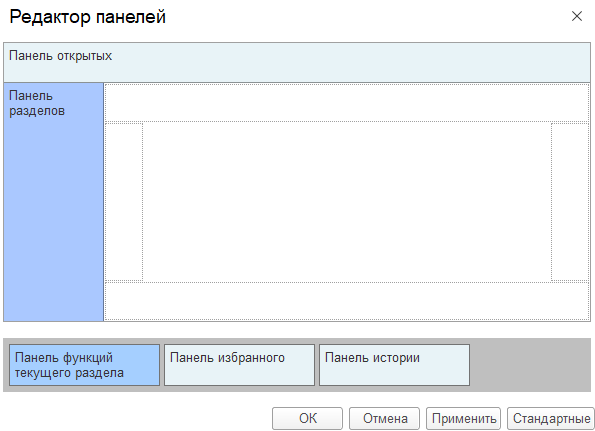
1.2 Настройка панели разделов
В правой части, в верхнем углу интерфейса, откройте меню «Сервис и настройки» - «Настройки» и выберите команду «Настройка панели разделов»;
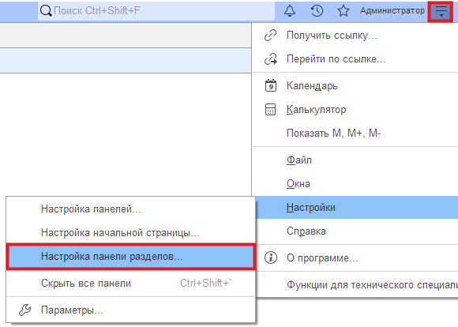
В открывшемся окне отображается актуальная настройка панели разделов;
Чтобы отобразить или удалить определенный раздел – выберете необходимый раздел из списка и нажмите команду «Добавить» или «Удалить»;
Чтобы настроить отображение разделов (только картинка или картинка и название раздела), воспользуйтесь настройкой «Показывать» и выберете из списка вид отображения раздела;
Сохраните изменения кнопкой «ОК».
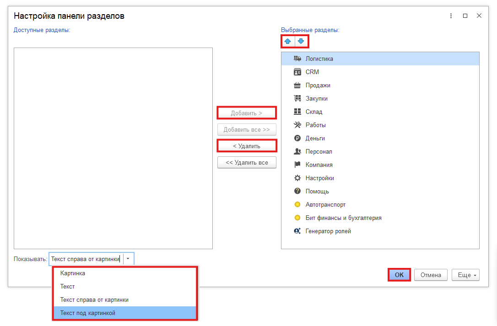
1.3 Настройка панели навигации и панели действий внутри раздела
Внутри каждого раздела справа расположена панель навигации (список команд и справочников) и панель действий.
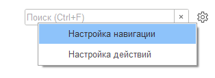
Для изменения состава и порядка команд выберите «Настройка панели навигации» либо «Настройка панели действий», с помощью команд «Добавить» и «Удалить» произведите настройку состава выбранного раздела.
Сохраните изменения кнопкой «ОК».
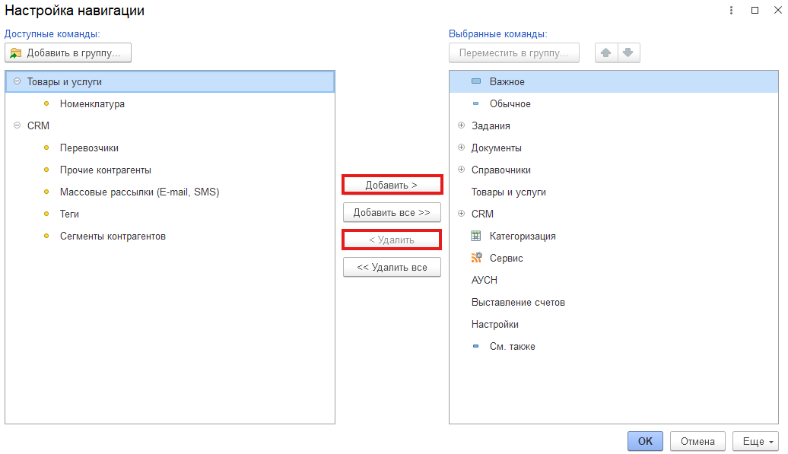
Справочник «Клиенты»
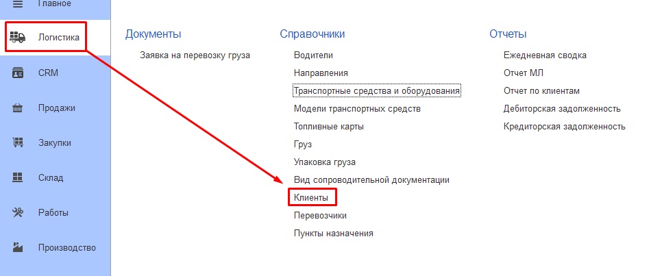
В правой части списка отображается контактная информация контрагента. Прямо из панели можно позвонить клиенту, написать письмо или посмотреть адрес на карте.
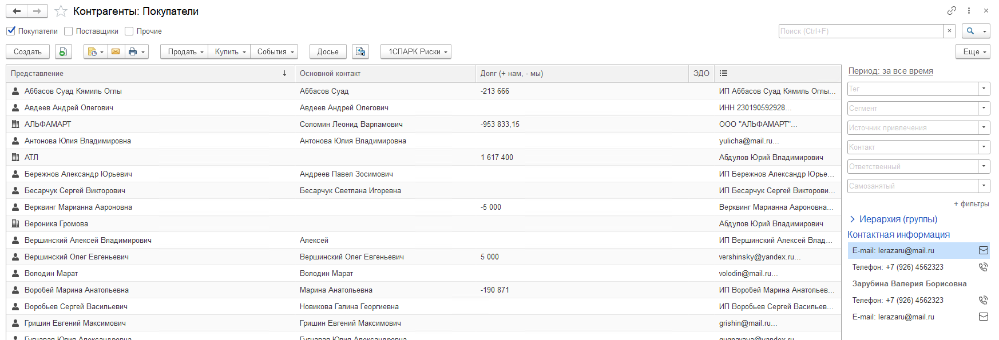
Для каждого контрагента определяется тип организации (юридическое лицо, индивидуальный предприниматель, физическое лицо или государственный орган). Выбор типа влияет на состав реквизитов по ссылке в поле Юридические данные.
В группе Адреса, телефоны хранятся контактные данные контрагента, такие как телефон, e-mail, адрес доставки и фактический адрес. Прямо из карточки контрагента можно позвонить клиенту, написать ему в мессенджере или посмотреть адрес на карте. В группе реквизитов Контакты отображаются все контактные лица контрагента с адресами и телефонами. Здесь можно добавить новый контакт, связать контрагента с одним из существующих контактов или, наоборот, разорвать связь с контактом.
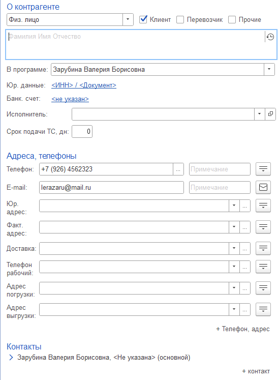
В группах «Условия отказа от заявки» и «Документооборот» указываются данные, которые в дальнейшем будут перенесены в Заявку.
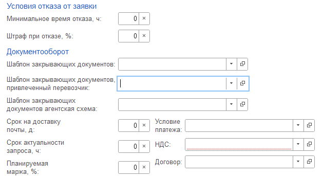
Справочник «Перевозчики»
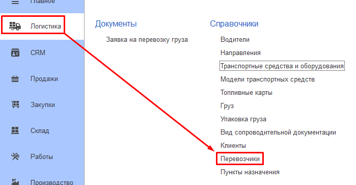
Юридические данные, данные о банковских счетах, договорах, документообороте и т.д. заполняются по аналогии со справочником «Клиенты». Для перевозчиков добавляется возможность добавить водителей, транспортные средства, направления по кнопке «Добавить». Как создавать элементы этих справочников см. далее.
Шаблоны закрывающих документов
Шаблоны закрывающих документов используются в карточке Клиента или Перевозчика в разделе документооборот.
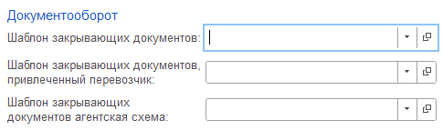
Шаблон необходимо настроить для каждого вида перевозки (собственным транспортом, привлеченным перевозчиком, по агентской схеме. Чтобы создать новый шаблон необходимо нажать «Показать все» - «Создать». В открывшемся окне задать наименование шаблону (то как этот шаблон будет отображаться в списке, для его быстрого поиска) и выбрать список документов. Документы с пометкой «Перевозчик» задаются только перевозчикам, с пометкой «Клиент» - клиентам. Документы с пометкой «Плательщик» участвуют в документообороте, если на форме заявки заполнен реквизит «Плательщик».
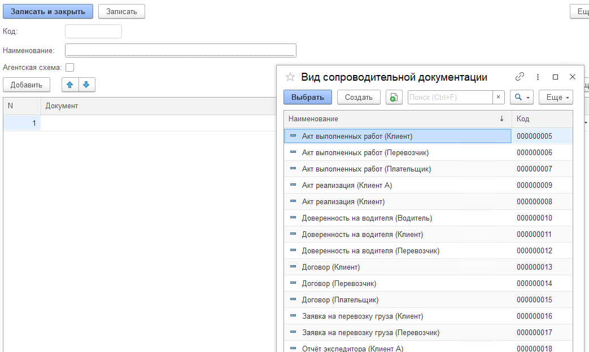
В дальнейшем, при создании заявки эти документы будут отображаться в блоке «Документооборот».
4.1 Порядок настройки шаблона документооборота
Шаблоны документооборота настраиваются в карточке контрагента (клиента или перевозчика) в группе «Документооборот». Для того чтобы шаблон использовался при создании заявок, его необходимо указать в карточке клиента.
1. Откройте карточку клиента и в группе «Документооборот» нажмите «Показать все» — откроется окно со списком шаблонов документооборота.
2. Если нужного шаблона нет, нажмите «Создать» — откроется окно создания шаблона.
3. В карточке шаблона укажите наименование (произвольное, для удобного поиска в списке, например «Основной: акт, счёт, УПД») и добавьте строки в табличную часть «Виды документов» по кнопке «Добавить». В поле «Документ» выберите вид документа (например, Акт выполненных работ, Счёт на оплату, Счёт-фактура (УПД)). Документы с пометкой «Перевозчик» задаются только перевозчикам, с пометкой «Клиент» — клиентам, с пометкой «Плательщик» — участвуют в документообороте, если в заявке заполнен реквизит «Плательщик».
4. Запишите и закройте шаблон (кнопка «Записать»).
5. В карточке клиента выберите созданный шаблон в поле для соответствующего вида перевозки: собственный транспорт, привлечённый перевозчик или агентская схема. Для разных видов перевозки можно указать разные шаблоны.
6. После этого при создании заявки шаблон подставляется автоматически, документы из шаблона отображаются в блоке «Документооборот», а состав создаваемых документов и печатных форм формируется в соответствии с выбранным шаблоном.
Справочник «Водители»
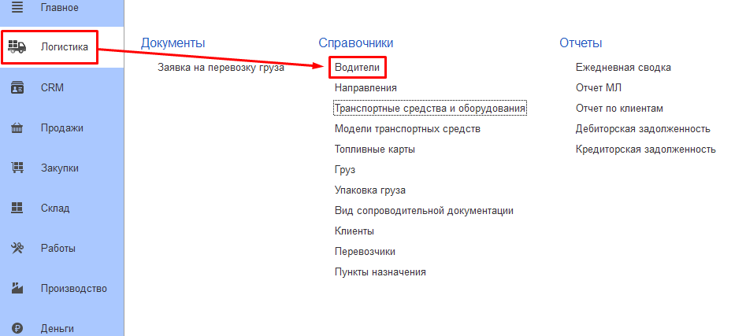
Справочник служит для хранения информации о привлечённых водителях и водителях собственной организации.
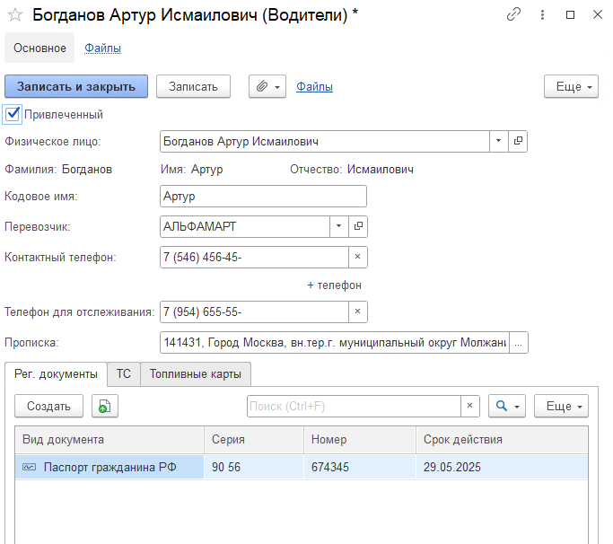
| Реквизит | Заполнение |
|---|---|
| Привлеченный | Поставить галочку, если это водитель сторонней организации |
| Физическое лицо | Ссылка на справочник Физические лица (подробнее см. далее). По кнопке Показать все необходимо выбрать существующее физическое лицо или создать новое |
| Фамилия, Имя, Отчество | Заполняются автоматически из справочника Физические лица |
| Кодовое имя | Краткое наименование водителя в программе |
| Перевозчик/Организация | Необходимо выбрать перевозчика, если стоит галочка Привлеченный или собственную организацию, если галочка не установлена |
| Контактный телефон | Указать контактный телефон водителя. Если их несколько можно добавить через «+ телефон» |
| Телефон для отслеживания | Телефон водителя для отслеживания |
| Прописка | Адрес по прописке водителя |
| Вкладка Регистрационные документы | Список всех регистрационных документов (ВУ, Паспорт, СНИЛС и т.д.). О заполнении документов см. далее |
| Вкладка Транспортные средства (ТС) | На вкладке указывается за каким ТС закреплен водитель |
| Вкладка Топливные карты | На вкладке указываются топливные карты, закрепленные за водителем |
Регистрационные документы водителей
Чтобы добавить документы водителя, необходимо нажать Создать на вкладке Рег.документы
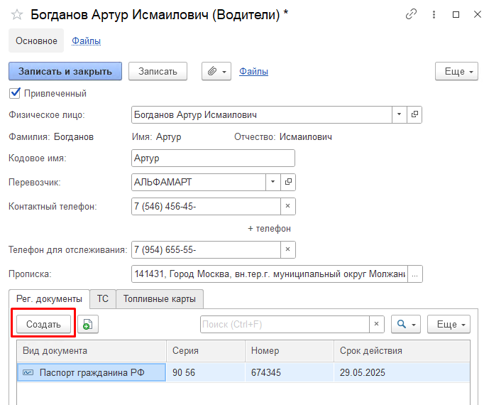
В открывшемся окне заполнить реквизиты.
| Реквизит | Заполнение |
|---|---|
| Физ.лицо | Элемент справочника Физические лица. Заполнится автоматически, если в карточке водителя, из которой создается документ, заполнено физическое лицо |
| Вид документа | Выбрать вид документа из перечислений (паспорт, СНИЛС, ВУ и т.д.). В зависимости от того, какой вид документа выбран, состав реквизитов на форме может быть разный. Например, для водительского удостоверения добавится реквизит Категория. |
| Серия, номер, дата выдачи, кем выдан | Необходимо заполнить, согласно данный на документах. Эти данные будут в дальнейшем использоваться в печатных формах. Например, СНИЛС водителя в путевом листе. |
Топливные карты
Список всех топливных карт можно открыть через Логистика – Топливные карты.
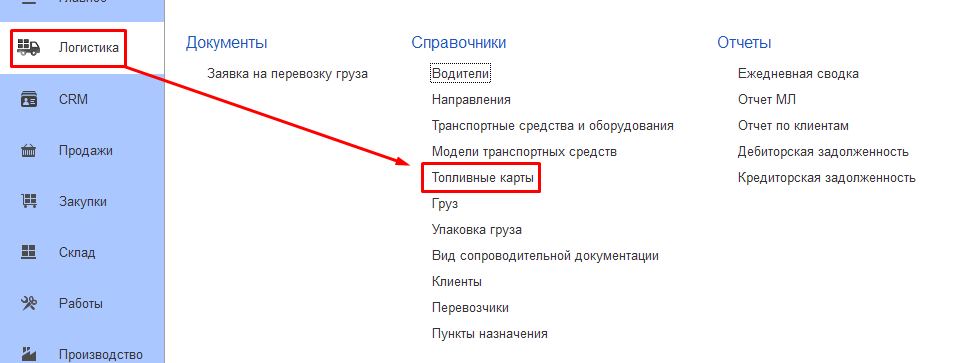
Указать принадлежность за водителем можно как в самом справочнике Топливные карты, так и из карточки водителя.
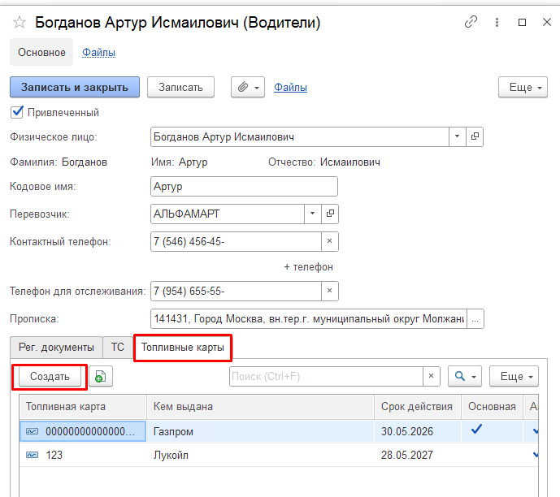
При создании топливной карты необходимо указать, наименование (например, номер и АЗС), номер топливной карты, кем она выдана (АЗС), до какого срока действует и является и она активной.
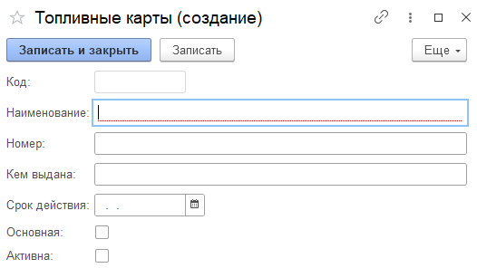
Справочник «Модели транспортных средств» и «Транспортные средства»
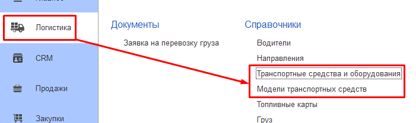
Перед заполнением справочника Транспортных средств необходимо заполнить справочник Моделей транспортных средств. Данные, заполненные для модели, автоматически будут перенесены в карточку ТС.
8.1 Справочник Модели транспортных средств
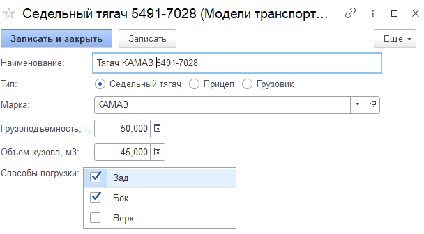
| Реквизит | Заполнение |
|---|---|
| Наименование | Произвольное наименование. Например, марка и модель |
| Тип | Выбор из значений Тягач/Прицеп/Грузовик |
| Марка | Марка модели |
| Грузоподъёмность и объем кузова | Заполняются только для грузовиков и прицепов |
| Способ погрузки | Произвольная комбинация из различных способов погрузки |
8.2 Справочник «Транспортные средства»
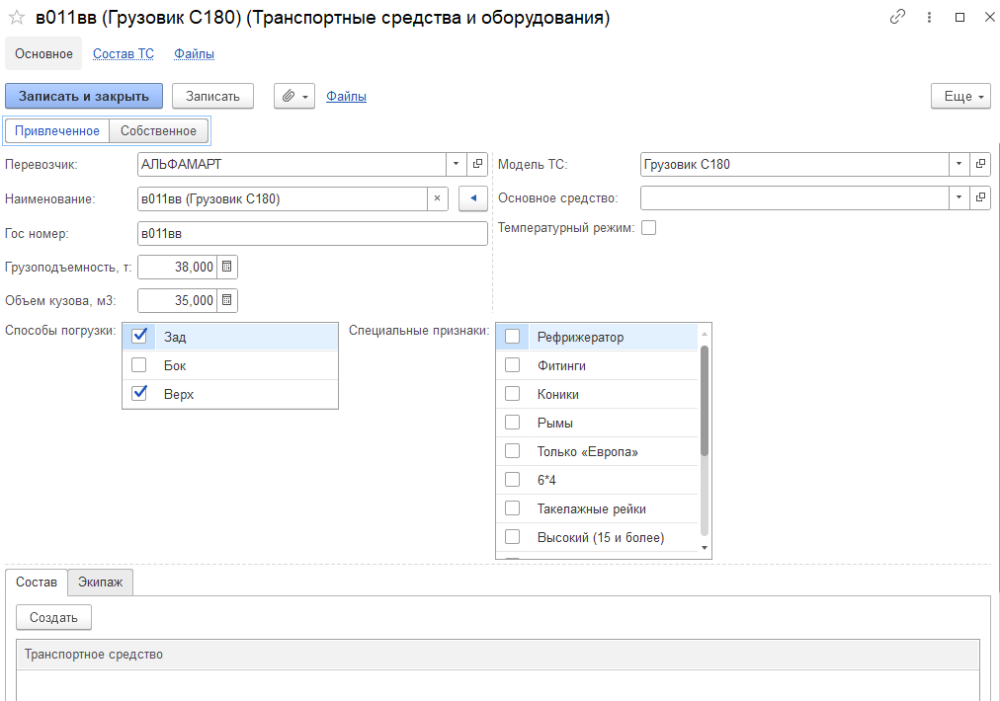
| Реквизит | Заполнение |
|---|---|
| Привлеченное/Собственное | Указывает на то, является ли ТС собственностью нашей организации или собственностью перевозчика |
| Перевозчик/Организация | Указывается наша организация или контрагент (в зависимости от переключателя Привлеченное/Собственное) |
| Модель ТС | Обязательное поле для заполнения. После выбора модели реквизиты ТС будут заполнены в соответствии с моделью. |
| Наименование | Формируется автоматически при записи карточки ТС как Гос.номер + наименование модели |
| Гос.номер | Государственный номер ТС |
| Грузоподъемность, объем кузова, способы погрузки | Заполняются автоматически из модели ТС, но при необходимости могут быть изменены для конкретного ТС |
| Вкладка Состав | Указывается сцепка тягач + прицеп. Если заполнено, при выборе тягача в заявке будет автоматически подставлен соответствующий прицеп |
| Вкладка Экипаж | Указываются водители, которые закреплены за ТС |
По гиперссылке Файлы будет открыт перечень всех присоединённых файлов. Здесь можно прикреплять сканы регистрационных документов и т.д.
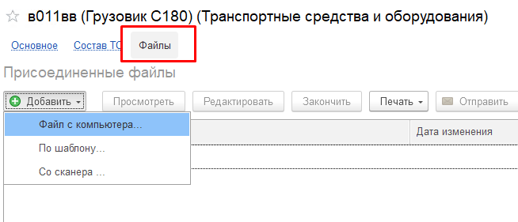
Документ «Заявка на перевозку груза»
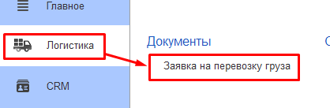
9.1 Шапка документа
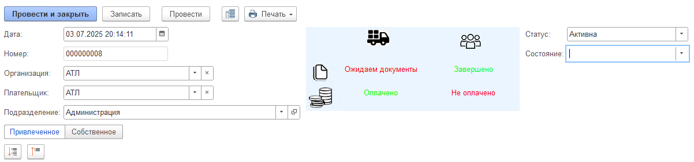
| Реквизит | Заполнение |
|---|---|
| Дата и номер | Заполняются автоматически при записи или проведении документа |
| Организация | Собственная организация, от которой выставляются услуги |
| Плательщик | Необязательно для заполнения. Собственная организация, которая осуществляет оплату перевозчику |
| Подразделение | Подразделение собственной организации. Используется как дополнительная аналитика |
| Статус | Может принимать значения Черновик (когда документ только записан, но не проведен. Не учувствует в учете), Активна (после проведения документа), Закрыта (статус устанавливается вручную после закрытия заявки), Отказ (устанавливается вручную, если произошел отказ от заявки) |
| Состояние | Устанавливается только вручную. Может принимать значения Идет погрузка, Погружен, В пути, Идет выгрузка, Выгружен |
| Переключатель Привлеченное/Собственное | Для выбора перевозки. Влияет на состав реквизитов. |
| Кнопки | Позволяют свернуть или развернуть все блоки заявки |
9.2 Блок «Клиент»
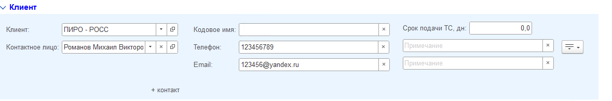
Необходимо выбрать клиента из справочника. Остальные реквизиты будут заполнены автоматические (если они заполнены в карточке клиента). Если необходимо добавить дополнительный контакт – нажать «+ контакт». Введенные данные будут сохранены в карточку клиента.
При нажатии на кнопку напротив номера телефона, будет открыт браузер с Telegram или WhatsApp с чатом выбранного номера.
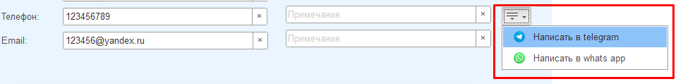
9.3 Блок «Груз»
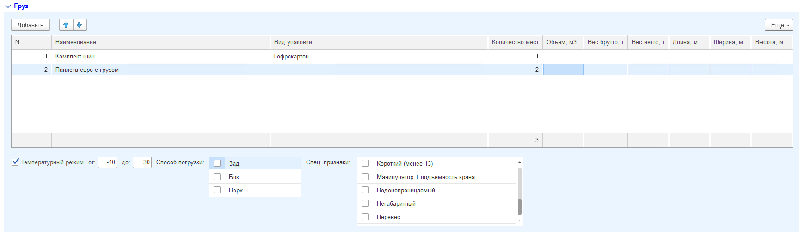
В табличную часть необходимо добавить описание груза. Наименование, Вид упаковки, количество грузовых мест, весогабаритные характеристики.
Ниже расположены реквизиты для указания температурного режима, способа погрузки и специальных признаков ТС.
9.4 Блок «Погрузка/Разгрузка»
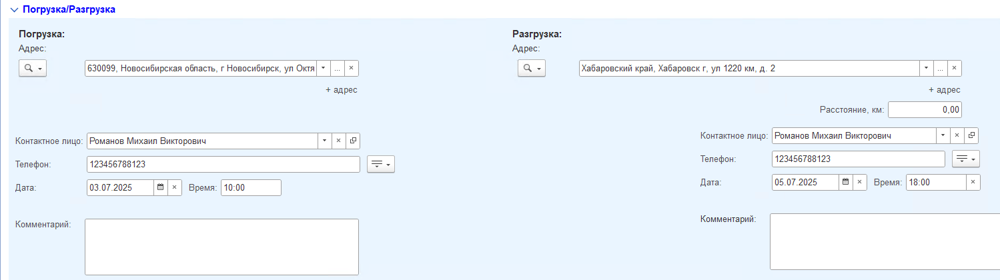
Адрес погрузки и адрес разгрузки заполняется автоматически из карточки клиента из соответствующих реквизитов. При необходимости добавить дополнительные пункты, нажмите «+ адрес».
При нажатии на кнопку рядом с адресом, будет открыт браузер и соответствующий адрес на карте.
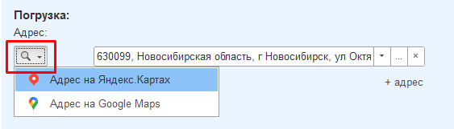
В полях Контактное лицо, можно выбрать контактное лицо контрагента. Также необходимо указать даты и время погрузки и выгрузки. При необходимости можно указать произвольный текстовый комментарий.
9.5 Блок «Перевозчик, водитель, ТС»
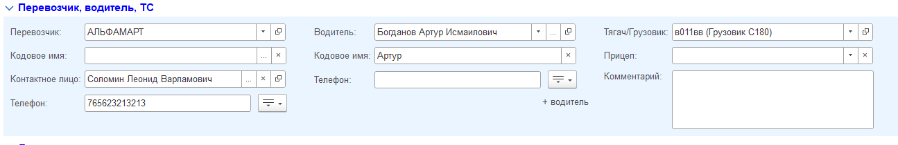
Реквизиты, которые отражаются в этом блоке, зависят от того, в каком положении установлен переключатель Привлеченное/Собственное.
Если переключатель установлен в положение Привлеченное, необходимо указать контрагента перевозчика, его водителя, грузовик или тягач и прицеп.
Внимание! Реквизит «Прицеп» в блоке «Перевозчик, водитель, ТС» доступен для заполнения только в том случае, если прицеп указан в карточке водителя и привязан к организации.
Если переключатель установлен в Собственное, необходимо указать только водителя и ТС.
9.6 Блок «Деньги»
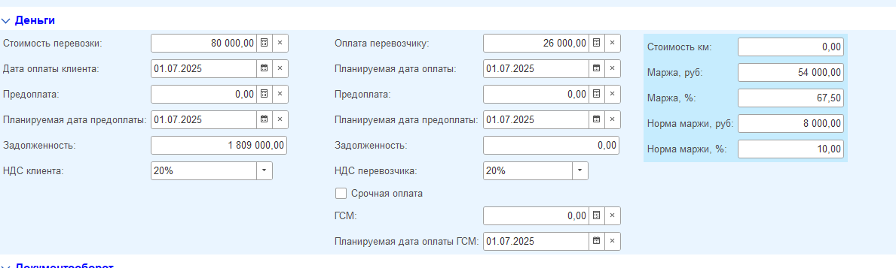
Реквизитный состав блока зависит от переключателя Привлеченное/Собственное.
| Реквизит | Заполнение |
|---|---|
| Первый столбец | |
| Стоимость перевозки | Общая сумма, выставляемая клиенту |
| Дата оплаты клиента | Планируемая дата оплаты полной суммы клиентом |
| Предоплата | Сумма предоплаты от клиента |
| Планируемая дата предоплаты | Планируемая дата внесения предоплаты клиентом |
| Задолженность | Общая задолженность клиента перед нашей организацией. Заполняется автоматически |
| НДС клиента | Заполняется автоматически из карточки клиента |
| Второй столбец (если переключатель установлен как Привлеченное) | |
| Оплата перевозчику | Общая сумма оплаты перевозчику |
| Планируемая дата оплаты | Планируемая дата оплаты полной суммы перевозчику |
| Предоплата | Сумма предоплаты перевозчику |
| Планируемая дата предоплаты | Планируемая дата предоплаты перевозчику |
| Задолженность | Общая наша задолженность перед перевозчиком. Заполняется автоматически |
| НДС перевозчика | Заполняется автоматически из карточки перевозчика |
| Срочная оплата | Если галочка установлена, попадает в реестр срочных платежей |
| ГСМ | Оплата перевозчику за ГСМ |
| Планируемая дата оплаты ГСМ | Планируемая дата оплаты ГСМ |
| Третий столбец | |
| Стоимость, км | Рассчитывается автоматически в зависимости от стоимости перевозки и оплаты перевозчику |
| Маржа, руб | Рассчитывается автоматически в зависимости от стоимости перевозки и оплаты перевозчику |
| Маржа, % | Рассчитывается автоматически в зависимости от стоимости перевозки и оплаты перевозчику |
| Норма маржи, руб | Рассчитывается автоматически в зависимости от стоимости перевозки, оплаты перевозчику и нормы маржи, установленной в карточке клиента |
| Норма маржи, % | Заполняется автоматически из карточки клиента. Если норма маржи выше, чем фактическая, то такая заявка не может быть проведена. |
9.7 Блок «Документооборот»
В блоке документооборот содержится информация о документах согласно настроенным шаблонам, в карточке клиента и перевозчика.
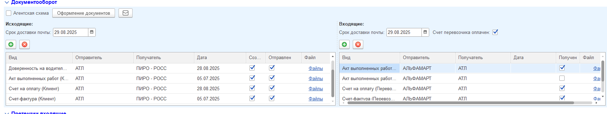
| Реквизит | Заполнение |
|---|---|
| Агентская схема | Признак проставляется вручную, если перевозка осуществляется по агентской схеме. Если стоит галочка, то будет использоваться тот шаблон документооборота, который указан в карточке клиента и перевозчика для агентской схемы |
| Срок доставки почты | Рассчитывается автоматически исходя из текущей даты и срока на доставку почты, указанного в карточке контрагента |
| Вид | Вид созданного документа |
| Отправитель | Кто формирует документ. Может принимать значение нашей организации, клиента или перевозчика |
| Получатель | Тот, кому адресован документ. Может принимать значение нашей организации, клиента или перевозчика |
| Дата | Дата создания документа |
| Создан | Признак тот, что документ создан, устанавливается автоматически |
| Отправлен | Признак того, что документ отправлен, устанавливается вручную |
| Файл | При нажатии на гиперссылку можно прикрепить документ (файл) или просмотреть ранее прикрепленные |
9.8 Создание документов из заявки
Пакетное оформление документов. Кнопка «Оформить документы» в форме заявки формирует пакет документов по виду перевозки:
Состав создаваемых документов определяется шаблонами документооборота, указанными в карточке клиента (см. раздел «Шаблоны закрывающих документов»).
Привлеченное;
Собственное.
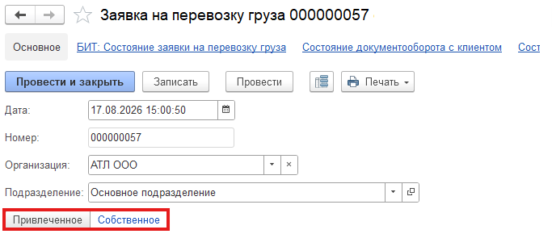
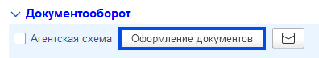
Если указан вид «Привлеченное»: создается пакет для клиента + пакет для перевозчика.
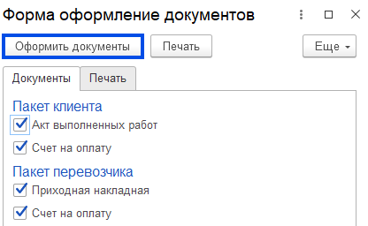
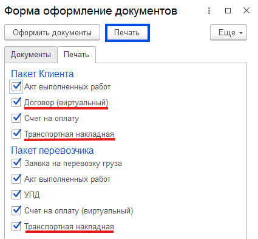
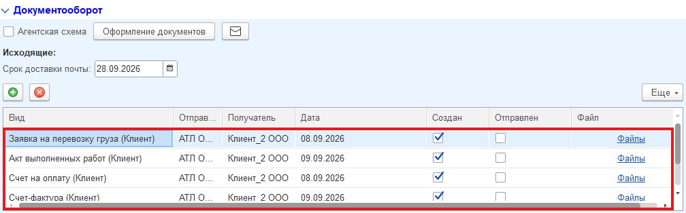
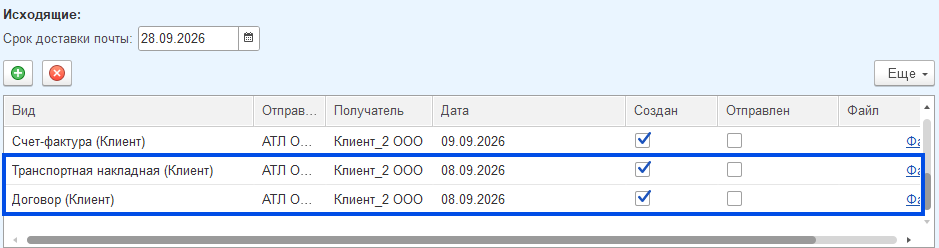
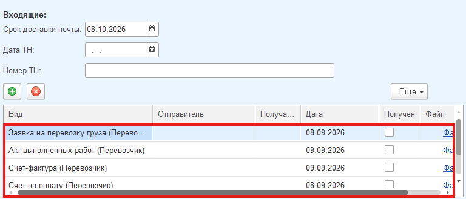
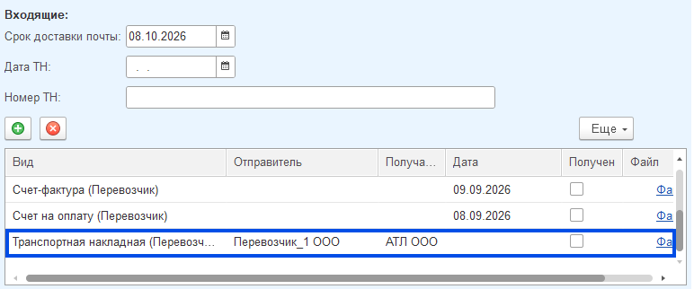
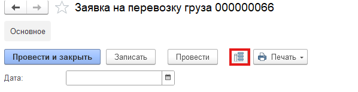
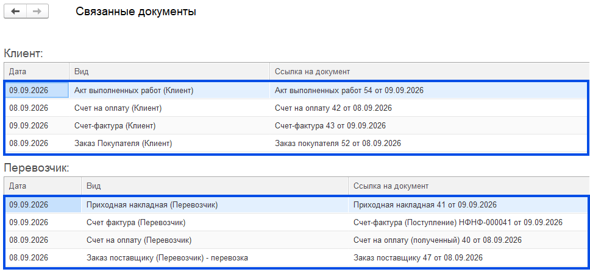
Если указан вид «Собственное»: создается пакет для клиента.
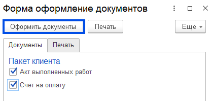
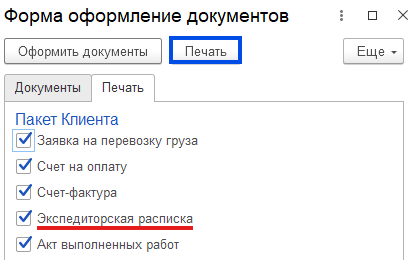
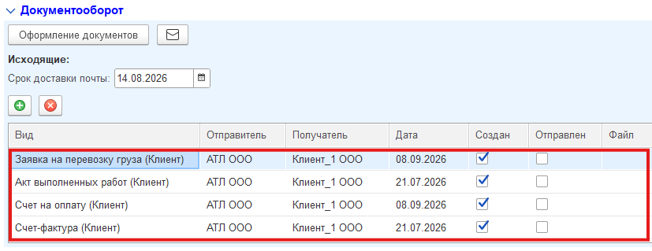
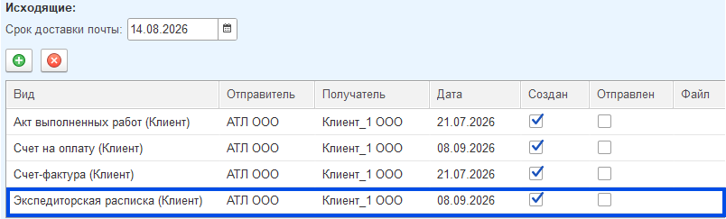
Созданным документам автоматически присваиваются номера, и они сразу проводятся. Команда «Печать» открывает предпросмотр всех печатных форм с возможностью сохранения в PDF/Excel/Word и отправки по электронной почте.
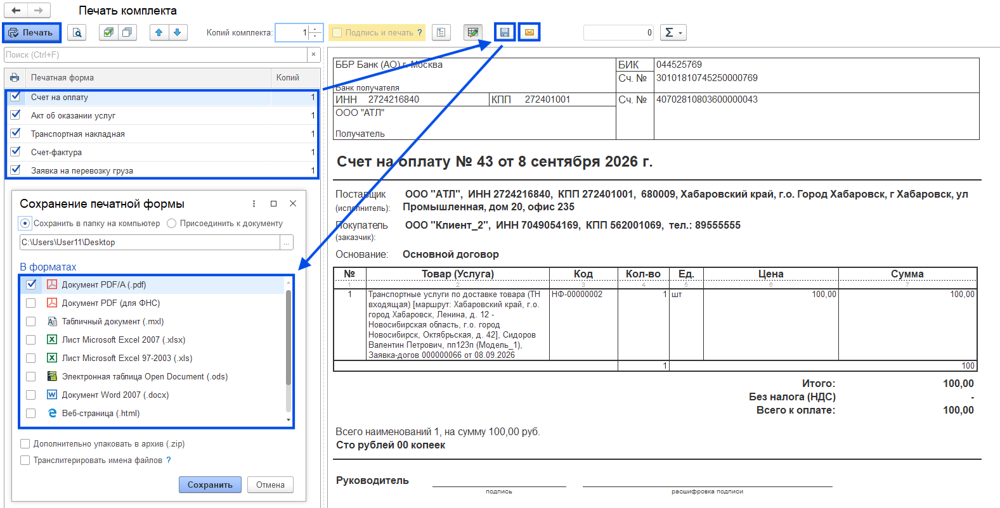
9.9 Блоки «Претензии входящие» и «Претензии исходящие»
Блок предназначен для фиксации претензий как входящих, так и исходящих.
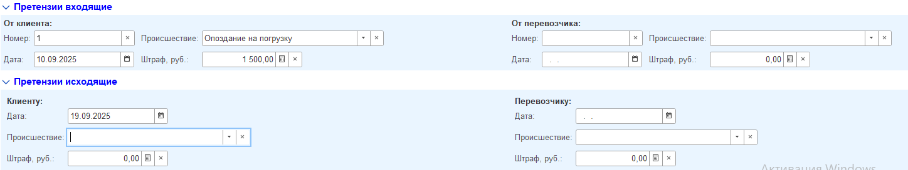
Реквизит «Происшествия» заполняется из одноименного справочника. Для того, чтобы открыть весь список происшествий необходимо нажать «Показать все». Если в списке нет нужного происшествия, по кнопке «Создать» открывается форма создания нового элемента.
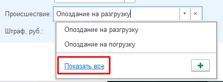
| Реквизит | Заполнение |
|---|---|
| Номер | Заполнить номер входящей претензии от клиента или перевозчика |
| Дата | Выбрать дату происшествия |
| Происшествие | Заполняется из одноименного справочника |
| Штраф | Заполнить сумму штрафа (входящего или исходящего) |
Статусы заявки на перевозку груза
У каждой заявки на перевозку груза есть два независимых показателя: «Статус» и «Состояние».
«Статус» отражает этап жизненного цикла документа, «Состояние» — текущую фазу выполнения перевозки.
10.1 Статусы заявки
Черновик — заявка сохранена (кнопка «Записать»), но не проведена. Не влияет на учёт, доступна для дальнейшего редактирования.
Активна — заявка проведена (кнопка «Провести» или «Провести и закрыть»). Участвует в учёте, по ней выполняются перевозка и формируются движения.
Закрыта — заявка завершена. Проставляется вручную менеджером-логистом после проверки всех документов и взаиморасчётов.
Отказ — заявка отклонена. Проставляется вручную менеджером-логистом. При проведении заявки со статусом «Отказ» формируются только записи по статусу заявки (используются в отчётах для подсчёта отказных заявок); на взаиморасчёты и финансовые показатели такие записи не влияют.
10.2 Переходы статусов
Кнопка «Записать» — заявка переходит в статус «Черновик».
Кнопка «Провести» — при проведении из статуса «Черновик» заявка автоматически переходит в статус «Активна».
Команда «Отмена проведения» — заявка возвращается в статус «Черновик».
Статусы «Закрыта» и «Отказ» устанавливаются вручную менеджером-логистом.
Состояние перевозки (проставляется вручную по ходу выполнения): «Идет погрузка» → «Погружен» → «В пути» → «Идет выгрузка» → «Выгружен».
Автоматические состояния (рассчитываются системой и отображаются с цветовой индикацией):
Документооборот с перевозчиком:
«Ожидаем документы» (красный) — пока есть входящие документы без признака «Получен» (документы перевозчика ещё не получены).
«Завершено» (зелёный) — когда у всех входящих документов установлен признак «Получен».
Отображается только для привлечённого транспорта.
Взаиморасчеты с перевозчиком:
Ожидаем счет — счёт на оплату в табличной части «Входящие» блока «Документооборот» не получен.
Не оплачено — счёт получен, но оплата перевозчику не поступила.
Частично оплачено — поступила часть оплаты перевозчику (промежуточное состояние).
Оплачено — оплата перевозчику поступила полностью.
Состояние рассчитывается автоматически на основании признаков документов в табличной части «Входящие» и поступивших оплат перевозчику. Отображается только для привлечённого транспорта.
Документооборот с клиентом:
«Ожидается отправка» (красный) — пока есть исходящие документы без признака «Отправлен» (документы клиенту ещё не отправлены).
«Завершено» (зелёный) — когда все исходящие документы отправлены.
Взаиморасчеты с клиентом:
Ожидаем документы перевозчика — ожидается получение документов от перевозчика.
Нужен счет — документы получены, но счёт клиенту ещё не выставлен.
Не оплачено — счёт клиенту выставлен, но оплата не поступила.
Частично оплачено — поступила часть оплаты от клиента (промежуточное состояние).
Оплачено — оплата клиента поступила полностью.
Состояние рассчитывается автоматически на основании поступивших оплат от клиента и признаков документов в табличной части «Исходящие».
Форма списка заявок на перевозку груза содержит вкладки:
«Активные» (все заявки, кроме статусов «Закрыта» и «Черновик»);
«Черновики» (статус «Черновик»);
«Архив» (закрытые и отклонённые заявки). Доступны фильтры для проведения отбора заявок.
10.3 Принцип изменения автоматических состояний
Автоматические состояния рассчитываются системой и пересчитываются автоматически при проведении заявки, а также при изменении исходных данных: признаков документов в табличных частях блока «Документооборот» («Получен»/«Отправлен») и поступления оплат. Вручную автоматические состояния не редактируются.
10.4 Где посмотреть и зафиксировать
Состояния отображаются в карточке заявки (блоки «Документооборот» и «Деньги»), а в форме списка заявок — отдельными колонками: «Состояние документооборота с перевозчиком», «Состояние взаиморасчетов с перевозчиком», «Состояние документооборота с клиентом», «Состояние взаиморасчетов с клиентом».
10.5 Цвет кружка — обозначение состояния
В форме списка и в заявке каждое автоматическое состояние отображается цветным кружком: красный — состояние требует внимания (ожидание документов, счёта или оплаты; не оплачено; нужен счёт); зелёный — состояние завершено или оплачено («Завершено», «Оплачено»); жёлтый — промежуточное состояние («Частично оплачено»).
Форма списка заявок на перевозку груза содержит вкладки:
«Активные» (все заявки, кроме статусов «Закрыта» и «Черновик»);
«Черновики» (статус «Черновик»);
«Архив» (закрытые и отклонённые заявки). Доступны фильтры для проведения отбора заявок.
Проведение документа «Заявка на перевозку груза»
Проведение — это «утверждение» документа в программе 1С. Непроведённый документ не имеет силы и не влияет на учёт.
11.1 Кнопки на панели инструментов заявки
«Записать» — сохраняет документ в статусе «Черновик» (присваиваются номер и дата, на учёт не влияет).
«Провести» — проводит документ, форма остаётся открытой.
«Провести и закрыть» — проводит документ и закрывает форму (горячие клавиши Ctrl+Enter).
11.2 Что происходит при проведении заполненной заявки
Статус автоматически становится «Активна» (если заявка проводилась из статуса «Черновик»).
Выполняется проверка обязательных полей:
Клиент;
Организация (заполняется автоматически);
Адрес погрузки и адрес разгрузки;
Дата и время погрузки;
Дата и время разгрузки;
Контактное лицо и телефон по погрузке и по разгрузке;
ФИО водителя (табличная часть «Водители»);
Перевозчик (если перевозка с привлечённым транспортом).
Выполняется проверка маржинальности: если расчётная маржа меньше нормы маржи, проведение запрещается и выводится сообщение «Рассчитанная маржинальная прибыль меньше, чем плановая. Для проведения заявки с текущим показателем маржинальной, обратитесь к ответственному лицу».
В этом случае необходимо обратиться к ответственному лицу (для роли «Директор» проверка не применяется).
Заполняются условия и плановые даты оплаты из карточек клиента и перевозчика.
Внимание! Для автоматического заполнения условий и плановой даты оплаты, необходимо заполнить справочник «Условие платежа» в карточке клиента и перевозчика.
Обновляется состояние документооборота и взаиморасчетов с клиентом и перевозчиком (Если были заполнены данные в разделах «Деньги» и «Документооборот».
Автоматически формируются технические документы «Заказ покупателя» и «Заказ поставщику».
Проведение заявки со статусом «Отказ»: формируются только записи по статусу заявки (используются в отчётах для подсчёта отказных заявок); на взаиморасчёты и финансовые показатели такие записи не влияют.
Отмена проведения: документ возвращается в статус «Черновик», созданные движения очищаются.
Создание документов на основании заявки
Документы создаются на основании заявки в информационной базе: появляются в списках документов и в блоке «Документооборот» заявки, получают номера, проводятся и связываются с заявкой. Печатные формы — это печатные представления данных заявки: они формируются командой «Печать», не создают документов в базе и не влияют на учёт. Состав создаваемых документов и перечень печатных форм определяются шаблонами документооборота, указанными в карточке клиента (см. раздел «Шаблоны закрывающих документов»).
12.1 Кнопка «Печать» позволяет создать следующие печатные формы
Экспедиторская расписка;
Договор с перевозчиком;
Транспортная накладная;
Заявка с клиентом;
Заявка на перевозку груза (перевозчику);
Заявка на перевозку груза (факсимиле).
Печатные формы создаются для соблюдения регламента и не влияют на учёт.
Перечень печатных форм определяется шаблонами документооборота, настроенными в карточке клиента (см. раздел «Шаблоны закрывающих документов»).
12.2 Формирование закрывающих документов по списку заявок
В форме списка заявок доступна команда «Сформировать закрывающие документы» для выделенных заявок. Участвуют только заявки со статусом «Активна». Состав формируемых документов определяется шаблонами документооборота, указанными в карточке клиента. Формируются:
УПД клиенту;
Счет на оплату для клиента;
УПД перевозчику;
Счет на оплату перевозчику.
По нескольким заявкам одного клиента формируется одна общая УПД и один общий счёт. По перевозчику — своя УПД и счёт по каждой заявке.
12.3 Отчёт «Связанные документы»
Отчёт показывает всю цепочку документов, созданных на основании заявки: